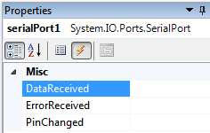

write_eeprom(address, value): esta función escribe un dato (entero de 8 bit) en la dirección especificada en address en la memoria interna del PIC. Al igual que read_eeprom address puede ser un entero de 8 ó 16 bit.
Algunas consideraciones a tener en cuenta sobre la memoria EEPROM es que es rápida en el proceso de lectura, pero puede tardar varios milisegundos en realizar un proceso de escritura. Otro factor a tener en cuenta es que se pueden hacer operaciones de lectura sobre el valor de sus registros el número de veces que se quiera, pero soportan un número limitado de ciclos de escritura / borrado. Ese número según Microchip es de aproximadamente un millón.
La memoria EEPROM de datos no está mapeada en la zona de la memoria de datos donde se ubican los registros SFR y GPR, si programáramos en Ensamblador deberíamos realizar una serie de pasos para su lectura y escritura que aunque no difíciles resultan al menos laboriosos. CCS nos permite abstraernos por completo del proceso de lectura y escritura, lo único que tenemos que saber es las funciones que tenemos que aplicar y los parámetros y valores que devuelven dichas funciones.
Como ejemplo del uso de este tipo de memorias vamos a utilizar las funciones básicas para leer y escribir datos en la memoria interna del PIC: read_eeprom (address) y write_eeprom (address, value).
El ejemplo es un contador. Como funcionalidades mínimas haremos que sea capaz de contar del 0 al 9 de manera ascendente y descendente, y que tenga un botón de RESET a cero.
Y por supuesto que si se corta el suministro de energía guarda en memoria el último valor.
El esquema del circuito será el siguiente:
Cuando queremos utilizar más de un display y minimizar el número de pines en el PIC para su control hay varias formas de hacerlo, una de ellas (la que utilizaremos en este ejemplo) es utilizar un decodificador BCD a 7 segmentos como el 7447 ó 7448.
Otra forma es multiplexar las líneas de datos, es decir en cada instante solo habrá un display activo pero el cambio de uno a otro será tan rápido que para el ojo humano parecerá que los dos están activos a la vez, este sistema es bueno porque nos ahorramos los decodificadores, pero si utilizamos más de cuatro display, notaremos un parpadeo molesto.
El código del programa será el siguiente:

Comentarios del programa:
El ejemplo básicamente es un contador ascendente/descendente de 0 a 9 que incrementa su valor cada vez que pulsamos "INC" (PIN B0) y decrementa el contador si se pulsa “DEC” (PIN B1) y además se puede restablecer a cero si se pulsa “RESET” (PIN B2). Para evitar que el contador se reinicie y empiece a contar desde cero cada vez que se interrumpa el suministro de energía, el valor actual del contador se almacenará en la memoria EEPROM del PIC en vez de en la memoria RAM. Como solo queremos guardar un valor que estará comprendido entre 0 y 99, solo utilizaremos el primer byte de la memoria EEPROM.
La primera vez que se ejecute el programa el valor de la EEPROM es 0xFF (viene así de fábrica) por lo que tendremos que sobrescribir su valor a 0 para iniciar el conteo, después de esto esta condición no se cumplirá más.
contador = read_eeprom(dir_contador);
if ((contador>9)||(contador<0))
contador=0;
Proteus simula bastante bien el uso de la memoria EEPROM del PIC, si paramos la simulación y volvemos a iniciarla vemos como los valores de la EEPROM se mantienen.
Extraído parcialmente de:
http://www.aquihayapuntes.com/indice-practicas-pic-en-c/memoria-eeprom-interna-del-pic.html
Como ejemplo del uso del conversor ADC del microcontrolador vamos a utilizar las funciones para leer el dato proveniente de un sensor en el rango de 0 a 5V.
Como funcionalidades mínimas haremos que sea capaz de leer una entrada entre 0 y 5V de manera que para 0V representará 0 ºC y 5V representará 100 ºC.
El esquema del circuito será el siguiente:

El código del programa será el siguiente:

Comentarios del programa:
El ejemplo está debidamente documentado, por lo cual su comprensión no reviste mayor dificultad.
Se debe tener especial atención al seleccionar el canal a leer:
set_adc_channel(0); esta instrucción selecciona el canal AN0
set_adc_channel(1); esta instrucción selecciona el canal AN1
set_adc_channel(2); esta instrucción selecciona el canal AN2… etc…
Temperatura = read_adc(); esta instrucción lee el valor análogo en el canal seleccionado previamente
Para observar la variación de la unidad medida se ha dispuesto un potenciómetro para simular el sensor de temperatura.
Extraído parcialmente de:
http://picmania.garcia-cuervo.net/conceptos.php#CONVAD01
Salida análoga PWM
Como ejemplo del uso de la conversión D/A vamos a utilizar las funciones para controlar la velociidad de un motor de corriente continua conectado al colector de un transistor bipolar NPN (TIP41).
Haremos que nuestro circuito sea capaz de realizar un conteo ascendente/descendente entre 0 y 1000 y que éste valor sea asignado al ciclo de trabajo del PWM para manipular el voltaje aplicado a la base del transistor.
Programa control de velocidad motor DC con PWM:
#include <16F877A.h>
//include <18F4550.h>
#fuses HS,NOWDT,NOPROTECT,NOLVP,NODEBUG
#use delay(clock=20000000)
#use PWM(OUTPUT=PIN_C2, FREQUENCY=10kHz, DUTY=0)
#include ".\Drivers\flex_lcd.c" //Driver para LCD alfanumérico 2x16
#define b_inc input(PIN_A0) //Definimos la ubicación de los
#define b_dec input(PIN_A1) //pulsadores
#define b_reset input(PIN_A2)
unsigned int16 PWM=0;
void main()
{
lcd_init(); //Inicialización del LCD
delay_ms(200);
OUTPUT_HIGH(PIN_B3); //El pin B3 es para la retroiluminación del LCD
pwm_on(); //Activar módulo PWM – PIN C2
printf(lcd_putc,"PWM: 0"); //Se imprime el texto en el LCD
while (true) //Bucle infinito que mantendrá el programa en ejecución
{
if (b_inc==1) //Rutina de conteo ascendente
{
if (PWM<1000){PWM=PWM+10;}
}
if (b_dec==1) //Rutina de conteo descendente
{
if (PWM>0){PWM=PWM-10;}
}
if (b_reset==1) //Rutina de reset
{
PWM = 0;
}
pwm_set_duty_percent(PWM); //Establecer ciclo de trabajo PWM (0 – 1000)
lcd_gotoxy(6,1);
printf(lcd_putc,"%Ld ",PWM);
delay_ms(10);
}
}
Comentarios del programa:
La variable PWM se ha programado que su valor aumente o disminuya 10 unidades por cada pulsación. Se ha limitado el valor máximo del parámetro PWM a 1000 y el mínimo a 0 y que nunca rebase estos límites. .
Se debe tener especial atención al asignar el ciclo de trabajo al PWM, el cual debe ser un número entero comprendido entre 0 (0V) y 1000 (5V), es decir, el incremento en una unidad en el contador se verá reflejado como una variación de 0,05V a la salida del pin C2 del microcontrolador.
Extraído parcialmente de:
http://www.dtic.upf.edu/~jlozano/interfaces/interfaces5.html
Algunas referencias de microcontroladores PIC incluyen módulos para comunicación dentro de su hardware. El módulo para comunicaciones RS-232 se conoce también como UART.
Para este tipo de comunicación lo primero será configurarla mediante la siguiente directiva en la cabecera del programa:
#use rs232(baud=9600,bits=8,parity=N,xmit=PIN_C6,rcv=PIN_C7,errors)
Esto quiere decir que cada vez que queramos utilizar las funciones para enviar o recibir información utilizando el protocolo de comunicación serie RS-232 debemos haber incluido previamente esta directiva, que posibilita la comunicación del PIC con otro dispositivo.
En general habrá que usar un conversor de niveles basado en el MAX232 o similar.
El protocolo serie es una descripción "digital" (0/1) de lo que debe estar pasando en la línea (por ejemplo, 1 mientras se espera, 0 indica el bit de start, etc.), pero no especifica que voltajes representan el 0/1 lógicos.
Por ejemplo en los PIC se usa la convención (lógica) que el 0 lógico son 0V y el 1 lógico (línea alta) son 5V.
En el puerto serie de un PC (standard RS232) la relación lógica/voltajes está invertida. Un 0 lógico se representa con un voltaje entre 3 y 15V (12 es típico) y un 1 lógico por un voltaje negativo (entre -3 y -15V). Es por esto por lo que para comunicar PIC-PC necesitamos un Max232 o equivalente.
Las especificaciones de su tarjeta le dirán cuales son los voltajes asociados a su puerto serie. Si dice algo de RS232 tendrá que usar seguramente un buffer tipo MAX232.
Si nuestro PIC no tiene UART como es el caso del PIC 16f84A, CCS nos permite implementar la comunicación serie por software y de forma totalmente transparente para el programador. Sin embargo el utilizar un PIC con UART nos permite disponer de una serie de funcionalidades adicionales, como el empleo de interrupciones para controlar el envío y recepción de datos.
Si queremos realizar una comunicación serie utilizando la USART del PIC, las conexiones tendrán que ser a las siguientes: RC6 para la transmisión de datos y RC7 para la recepción de datos.
Como vemos la directiva #use RS232 admite una serie de parámetros que son los que van entre paréntesis separados por comas, estos son los siguientes:
baud con este parámetro establecemos la velocidad en baudios a la que queremos que se transmitan los datos por el puerto serie, 9600 es lo normal.
bits número de bits que utilizaremos en la transmisión, el estándar establece que pueden ser 8 ó 9, para la comunicación con microcontroladores con 8 son suficientes.
parity nos permite utilizar un bit de paridad para la comprobación de errores.
xmit ésta opción nos permite seleccionar la patilla del PIC por la cual saldrán los datos.
rcv ésta opción nos permite seleccionar la patilla del PIC por la cual PIC se recibirán los datos.
errors El PIC se sobrecargará al recibir 3 caracteres con la función getc(). Esta opción previene el apagado del módulo UART detectando la condición y reseteándolo.
Pero ¿de qué funciones disponemos para enviar y recibir datos desde y hacia nuestro PIC?.
Para éste propósito disponemos de múltiples funciones
Para enviar solamente un caracter tenemos: putc()
Para enviar una cadena de caracteres: printf()
La forma de hacer la llamada a la función printf es la siguiente:
printf(cadena de caracteres,valores);
Los datos se enviaran por el puerto serie al pin que hayamos definido en la directiva #use RS232, en esta llamada vemos que tenemos la cadena de caracteres limitada por las comillas dobles y separado por una coma, como tercer parámetro el nombre de la variable i1 que habíamos declarado previamente. En la cadena de caracteres vemos que aparece el carácter de % seguido de la letra d, ese es un carácter especial para la función y lo que le indica a la función es que en esa posición muestre el valor de la variable i1, la d le indica a la función que represente ese valor en formato de número entero. Podemos representar el valor de la variable en diferentes formatos según se muestra en la tabla de abajo:
c |
Caracter |
s |
Cadena ó caracter |
u |
Entero sin signo |
d |
Entero con signo |
Lu |
Entero largo sin signo |
Ld |
Entero largo con signo |
x |
Entero Hexadecimal (minúsculas) |
X |
Entero Hexadecimal (mayúsculas) |
Lx |
Entero largo Hexadecimal (minúsculas) |
LX |
Entero largo Hexadecimal (mayúsculas) |
f |
Número real en coma flotante truncado |
g |
Número real en coma flotante con redondeo |
e |
Número real en formato exponencial |
w |
Entero sin signo con decimales insertados. Especifica dos números para n. La 1ª cifra indica el total y la 2ª el número de decimales |
Si quisiésemos mostrar el valor de más de una variable lo haríamos de la siguiente forma:
printf("El valor i1 es: %d el de i2: %d y el de i3: %d",i1,i2,i3);
Vamos con la última llamada a la función del 1º ejemplo:
printf (lcd_putc,"El valor de i1 es: %d",i1);
En esta llamada hemos incluido el primer parámetro y hemos puesto el nombre de la función lcd_putc, está función está definida en la librería LCD.C que trae el compilador para ayuda del manejo de los dispositivos LCD y que hemos incluido en nuestro programa por medio de la directiva #include <lcd.c>, vemos que la librería está encerrada entre los símbolos de <> esto le indica al compilador que busque la librería en el directorio en que se instalo el compilador, si copiáramos esa librería en otro directorio tendríamos que indicarle la ruta completa, pero esta vez encerrada entre comillas dobles.
Las secuencias de escape se utilizan para representar caracteres o acciones especiales.
printf("Esto es una cadena\r");
como parámetro incluimos una cadena de caracteres constante que termina en (\r), esa barra invertida junto con la r se le llama secuencia de escape y le está diciendo al compilador que al final de la cadena introduzca un retorno de carro (tecla enter).
En la tabla de abajo se muestran las secuencias de escape que tenemos disponibles para utilizar con la función printf:
\r |
Retorno de carro |
\t |
Tabulador |
\' |
Comilla simple |
\" |
Comillas dobles |
\\ |
Barra invertida |
\? |
Símbolo de interrogación |
\0 |
Caracter nulo |
\% |
Símbolo Tanto por ciento |
\b |
Retroceder un caracter |
Para recibir solamente un caracter tenemos: getc(), getch() y getchar(). Las tres hacen lo mismo por lo que podemos usarlas indistintamente.
Estas funciones esperan un carácter por la patilla del PIC que hayamos definido en la directiva #use RS232 con el parámetro rcv.
Pues vamos a ver nuestro primer ejemplo acerca del uso de estas funciones:
además de la función printf esta directiva permite el uso de otras funciones para la entrada y salida de datos serie como: getc, getchar, gets, puts y kbhit que iremos viendo poco a poco, pero la más importante para la salida de datos sin duda es printf, porque nos permite formatear la salida de esos datos de la forma que nosotros queramos.
Cada vez que por el pin configurado en la directiva #use rs232 como rcv se reciba nueva información, actuará la interrupción por recepción RS232 anteriormente habilitada y el programa saltará inmediatamente a la función int_RDA donde se encuentra el código que debe ejecutarse, en este caso, mostrar la información recibida por LCD.
Durante la simulación es muy conveniente que el micro nos mande mensajes, así como en un programa de PC normal con la ayuda de la función printf(), para este caso se puede conectar la terminal virtual de ISIS a la línea TX del micro que nos va a mandar la información y, con un simple printf() el programa va a mandar esa cadena por el puerto serial.
Manos a la obra!!!
En PIC-C CCS creamos un proyecto con las siguientes características:
* Micro-controlador PIC 18F4550.
* Frecuencia de reloj 20 MHz
|
Agregamos la directiva #use rs232(baud=9600,bits=8,parity=N,xmit=PIN_C6,rcv=PIN_C7,errors)


Seleccione el control SerialPort y haga click en el botón Events de la ventana de propiedades.

Acceda al evento DataReceived para programar las acciones que realizará el control al recibir datos (Doble Click en el espacio en blanco al frente de DataReceived).

Veamos una aplicación con un ejemplo:

Vamos a copiar el siguiente código ejemplo para la aplición propuesta:
#include <16F877A.h>
//#include <18F450.h>
#fuses HS,NOWDT,NOPROTECT,NOLVP,NODEBUG
#use delay(clock=20000000)
#use rs232(baud=9600,parity=N,xmit=PIN_C6,rcv=PIN_C7,bits=8,ERRORS)
#include "./Drivers/flex_lcd.c"
#include "./Drivers/2464.c"
#define boton_inicio input(PIN_A1)
#define boton_descargar input(PIN_A2)
#define boton_reset input(PIN_A3)
int1 guardar;
int16 contador = 0;
int16 direccion;
int8 sensor;
int32 temperatura;
#int_rtcc
void timer0()
{
set_timer0(6);
contador++;
if (contador>=12500)
{
contador=0;
if (guardar==1)
{
write_ext_eeprom(direccion,temperatura);
direccion++;
if (direccion>=8191)
{
lcd_gotoxy(0,2);
printf(lcd_putc,"Memoria llena... ");
}
else
{
write_eeprom(0,direccion);
}
}
}
}
void main()
{
init_ext_eeprom();
lcd_init();
delay_ms(300);
setup_adc_ports(AN0);
setup_adc(adc_clock_internal);
set_adc_channel(0);
setup_timer_0(RTCC_INTERNAL|RTCC_DIV_8|RTCC_8_BIT);
set_timer0(6);
enable_interrupts(INT_RTCC);
enable_interrupts(GLOBAL);
direccion=read_eeprom(0);
while(true)
{
sensor=read_adc();
delay_ms(10);
temperatura = sensor * 500 / 255;
lcd_gotoxy(1,1);
printf(lcd_putc,"Temp: %Lu",temperatura);
if (boton_inicio==1)
{
guardar=1;
lcd_gotoxy(2,2);
printf(lcd_putc,"Muestreando...");
}
if (boton_descargar==1)
{
if (guardar==1)
{
if (direccion>0)
{
lcd_gotoxy(1,2);
printf(lcd_putc," Descargando... ");
printf("$");
printf("%u",read_ext_eeprom(0));
for (int16 i=1;i<direccion;i++)
{
printf("/%u",read_ext_eeprom(i));
delay_ms(5);
}
printf("\n");
while (boton_descargar==1){delay_ms(10);}
lcd_gotoxy(1,2);
printf(lcd_putc," Muestreando... ");
}
}
else
{
lcd_gotoxy(1,2);
printf(lcd_putc," Iniciar antes ");
delay_ms(1500);
lcd_gotoxy(1,2);
printf(lcd_putc," ");
}
}
if (boton_reset==1)
{
if (guardar==1)
{
guardar=0;
lcd_gotoxy(1,2);
printf(lcd_putc," Borrando... ");
for (int16 i=0;i<=direccion;i++)
{
write_ext_eeprom(i,0xff);
delay_ms(5);
}
direccion=0;
write_eeprom(0,direccion);
while (boton_reset==1){delay_ms(10);}
printf(lcd_putc,"\f");
}
else
{
lcd_gotoxy(1,2);
printf(lcd_putc," Datos borrados ");
delay_ms(1500);
lcd_gotoxy(1,2);
printf(lcd_putc," ");
}
}
}
}